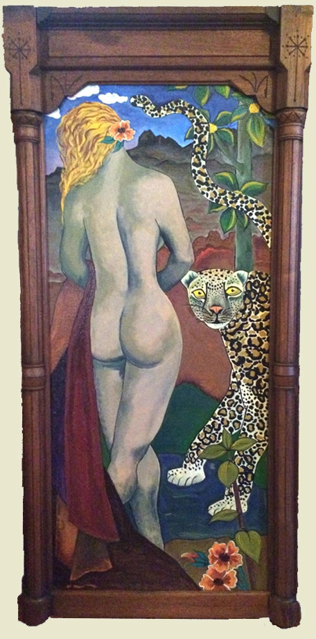

The Importance Of Predators
We have inherited an earth in danger and that danger is particularly apparent in the war on predators that we
have waged for centuries. Predators are essential to any ecosystem because they keep the prey species in balance
with what the ecosystem can support.
Predators and prey will always come to a balance because if there are too many predators (e.g. wolves, coyotes,
mountain lions, bears) the prey species will decline in numbers. The predators will then not have sufficient
food and they will decline until there is sufficient balance for the prey species to recover. Then the cycle
will repeat.
People have interrupted this cycle in numerous ways. Pollution, fences, logging, mining and loss of habitat, all
symptomatic of human overpopulation, have disrupted this natural cycle. There has been a wholesale destruction
of essential prey species, such as prairie dogs, by builders and developers. Organizations such as Prairie Dog
Coalition, a project of the Humane Society of the United States, work to preserve these keystone species and
thus the entire ecosystems which depend on them.
One factor in the decline of predators has been the use of lead ammunition. Lead is toxic to living ecosystems.
Because of its toxicity, lead has been removed from paint and gasoline, and yet it is still allowed as
ammunition in most states. Predators will die or suffer extremely negative long term effects from the ingestion
of just one lead shotgun pellet. Scavengers who then eat the carcasses will suffer the same effects and so it
gets passed along the food chain.
Probably most damaging has been the wanton destruction of predators by bounties placed upon the skins of
predators such as coyotes and wolves. Governmental agencies and bounty hunters were rewarded for killing as many
predators as possible. Australia currently offers a bounty on foxes. Sadly, hunting and ranching organizations
have traditionally applauded this approach.

There is a new awareness of the importance of predators to any wild ecosystem. When the wolves were returned to
Yellowstone in 1995, they preyed on the deer which meant that the deer populations were brought more into
balance with the ecosystem. Wolves take the old and weakest, who cannot escape, while hunters shoot the largest
and most healthy so they can hang their horns on a wall. The effect of this is that the healthiest animals in
the herd do not get the chance to procreate. Thus the wolves keep the species healthier in the long run while
the hunters keep it weaker.
There is a fascinating video on this subject which shows how the return of the wolves to Yellowstone
reinvigorated the entire ecosystem. Wolves slimmed down the deer herds, which in turn allowed the grasses, which
the deer had been eating vociferously, to return to the riverbed.
This, in turn, lead to more stable foundations for the river’s banks which allowed the fish and beavers to
return. This lead to its repopulation by frogs, salamanders and other river-dwelling species which in turn
provide food for the predators.
What are the practical implications of this for those of us who love animals and want to protect
wildlife?
Nature will return to a healthy balance if we just keep out of its way. It may take decades, depending on the
amount of damage we have caused, but it will occur. - Larry
References:
Prairie Dogs
Coyotes
Cultural Clash Between Hunters and Conservationists
Prairie Dogs
Toxic Effects of Lead Ammunition